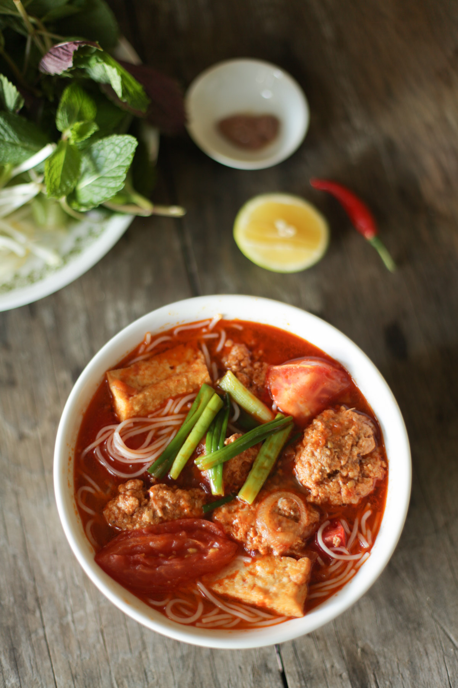

Home Page
The Most underated Noodle Soup - Bún Riêu

A Northern style Vietnamese Noodle soup with river crab meat and a tomato based broth
Bún riêu is another very popular and flavor-packed Vietnamese rice noodle soup, with soup flavored with tomatoes, shrimp paste, fish sauce and a meat broth.
It features tofu usually, but the unique addition to this soup is the “riêu” or meatballs, made of pork, shrimp, crab, and prawns.
What does Bún Riêu mean?
Bún means noodles and riêu refers to the big white blocks of crab cakes in the soup, which is traditionally made of pounded mini crabs and eggs. When you make the crab cakes, it should resemble sea foam when placed in the soup.
Ingrediants
Soup
- 50 g shallots
- 2 tbsp
- 2 lb (907.2 g) tomatoes
- 3 tbsp fish sauce
- 1 tsp salt
- 1-2 tbsp rock sugar
- 43.5 oz chicken broth
- 43.5 oz water
- 1-2 tsp MSG
Meatballs
- 25 g shallot
- 1/8 lb (56.7 g) raw shrimp
- 2/3 lb (302.4 g) ground pork
- 5.6 oz canned minced crab
- 2 large eggs
- 1 tsp pepper
- 1 tbsp
Noodles
- 1 lb dried rice vermicelli sticks
Steps
Soup
- Cook noodles according to package instructions, split between 4-5 bowls
- Thinly slice shallots, add oil to a pan and saute until light brown
- Add quartered tomatoes, stir fry for 3-5 minutes until slightly soft.
- Add shallots, tomatoes, and all remaining soup ingredients into a large pot.
- Raise to high heat until it hits a boil, and boils for five minutes.
- Reduce the heat to medium-low or low, so it maintains a low boil while you work on the Riêu.
Meatballs
- Add shallots into a small food processor, pulse until finely chopped.
- Add shrimp, pulse 5-6 times.
- Add remaining ingredients (except crab and green onion) and pulse a few times until evenly mixed.
- Pour into a mixing bowl, add crab and lightly mix with a spoon.
- Using a soup spoon, scoop 1-2 tbsp size meat balls (your choice!) into the pot until you use it all
- Raise the heat to high and bring to a boil, then drop heat to a low boil. At most it should take 20 minutes to cook the meatballs all the way through. Check doneness by breaking a meatball in half to make sure its not soft or raw inside.
- During the last five minutes of cooking, drop in the chopped green onion so it slightly softens
Serving
- Evenly divide contents of the soup pot between your 4-5 bowls.
- Serve a communal accoutrement plate on the side so each guest can customize their own
Nutritional Facts